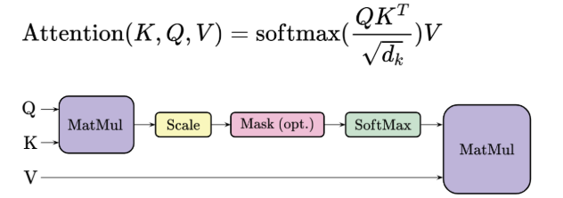
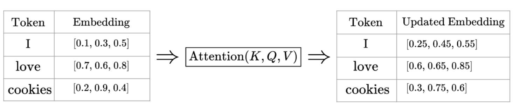

Project notes
Building the Self-Attention Mechanism from Scratch
In this project, I build a basic self-attention mechanism to calculate how each token attends to the other tokens in a sentence.
In this project, we’re going to implement the Self-Attention mechanism used in the Transformer architecture.
This post will begin with a short recap of how the attention mechanism works, followed by a code-along section where we implement the attention mechanism for calculating the attention scores of input text sentences.
Here’s the structure for this project post:
*Additionally, I’d like to mention that I wrote a dedicated technical post on how the Self-Attention mechanism works geometrically. Please check it out first to get a good geometric intuition for the roles of the $K$, $Q$, and $V$ matrices.
1. Quick Recap on How Self-Attention Works
The (scaled dot-product) Self-Attention mechanism is defined mathematically as:
Visually, the operations that happen within the scaled dot-product self-attention formula look like this:

As explored in the geometric intuition write-up, the Keys and Queries matrices project token vectors into a shared embedding space to compute pairwise similarities. The resulting scores tell us how much focus each token should receive.
Next, we use the attention weights obtained from the Keys and Queries matrices to compute a weighted combination in the Values embedding space, giving us context-aware, updated embeddings for our tokens.
Here’s a visualization of how context-aware, updated token embeddings are obtained after passing the original token embeddings through the Self-Attention mechanism:

Downstream, this attention output (the contextualized token embeddings) can be passed into a neural network for further refinement, and each final token embedding can be mapped into a probability distribution over the entire vocabulary. This enables next-word prediction and text generation like GPT.
Now we’re ready to implement the Self-Attention mechanism in code.
2. Code Implementation of the Self-Attention Mechanism
This implementation reflects my walkthrough adapting Sebastian Raschka’s implementation.
Embedding an Input Sentence
Let’s begin with an input sentence: "Life is short, eat dessert first". We need to create sentence embeddings before passing this input through the self-attention mechanism.
For simplicity, we’ll only include the words in this input sentence, whereas in practice a model vocabulary contains thousands of words.
To embed the words in our input sentence, we’ll follow three steps:
- Create a word-to-index dictionary of our input sentence after sorting the words alphabetically.
- Map the words in the original unsorted sentence to their corresponding indices and store them as a PyTorch tensor for numerical processing.
- Map each word to a $16$-dimensional vector via a PyTorch embedding layer.
Let’s go through each step one by one.
Step 1: Create a word-to-index dictionary after sorting alphabetically
Input:
sentence = "Life is short, eat dessert first"
dc = {s: i for i, s in enumerate(sorted(sentence.replace(",", "").split()))}
print(dc)
Output:
{'Life': 0, 'dessert': 1, 'eat': 2, 'first': 3, 'is': 4, 'short': 5}
Step 2: Map the original sentence words to indices in a PyTorch tensor
Input:
import torch
sentence_int = torch.tensor(
[dc[s] for s in sentence.replace(",", "").split()]
)
print(sentence_int)
Output:
tensor([0, 4, 5, 2, 1, 3])
Step 3: Map each word to a 16-dimensional vector via a PyTorch embedding layer
Input:
torch.manual_seed(42)
embed = torch.nn.Embedding(6, 16)
embedded_sentence = embed(sentence_int).detach()
print(embedded_sentence)
print(embedded_sentence.shape)
Output:
tensor([[ 1.9269, 1.4873, 0.9007, -2.1055, 0.6784, -1.2345, -0.0431, -1.6047,
-0.7521, 1.6487, -0.3925, -1.4036, -0.7279, -0.5594, -0.7688, 0.7624],
[ 1.4451, 0.8564, 2.2181, 0.5232, 0.3466, -0.1973, -1.0546, 1.2780,
-0.1722, 0.5238, 0.0566, 0.4263, 0.5750, -0.6417, -2.2064, -0.7508],
[ 0.0109, -0.3387, -1.3407, -0.5854, 0.5362, 0.5246, 1.1412, 0.0516,
0.7440, -0.4816, -1.0495, 0.6039, -1.7223, -0.8278, 1.3347, 0.4835],
[-1.3847, -0.8712, -0.2234, 1.7174, 0.3189, -0.4245, 0.3057, -0.7746,
-1.5576, 0.9956, -0.8798, -0.6011, -1.2742, 2.1228, -1.2347, -0.4879],
[ 1.6423, -0.1596, -0.4974, 0.4396, -0.7581, 1.0783, 0.8008, 1.6806,
1.2791, 1.2964, 0.6105, 1.3347, -0.2316, 0.0418, -0.2516, 0.8599],
[-0.9138, -0.6581, 0.0780, 0.5258, -0.4880, 1.1914, -0.8140, -0.7360,
-1.4032, 0.0360, -0.0635, 0.6756, -0.0978, 1.8446, -1.1845, 1.3835]])
torch.Size([6, 16])
Defining the Weight Matrices
Recall that for a given input $X$, we multiply it by three weight matrices $W_Q$, $W_K$, and $W_V$ to obtain the Queries, Keys, and Values matrices respectively.
The scaled dot-product self-attention mechanism learns and optimizes these three weight matrices as model parameters during training.
Since we compute the dot product between the Queries and Keys matrices, each row in $Q$ and $K$ must have the same dimensionality ($d_q = d_k$). On the other hand, the dimensionality $d_v$ of each row in the Values matrix can be chosen independently.
Here, we’ll set $d_q = d_k = 24$ and $d_v = 28$ arbitrarily, so that (given our $X$ has shape $6 \times 16$):
- $W_K$ has dimensions $d \times d_k = 16 \times 24$
- $W_Q$ has dimensions $d \times d_q = 16 \times 24$
- $W_V$ has dimensions $d \times d_v = 16 \times 28$
We define the weight matrices as follows:
Input:
torch.manual_seed(42)
d = embedded_sentence.shape[1]
d_k, d_q, d_v = 24, 24, 28
W_K = torch.nn.Parameter(torch.rand(d, d_k))
W_Q = torch.nn.Parameter(torch.rand(d, d_q))
W_V = torch.nn.Parameter(torch.rand(d, d_v))
Computing the Attention Weights from $K$ and $Q$
Now we’ll compute the unnormalized attention scores and normalized attention weights. First, we project the embedded input $X$ into $K$, $Q$, and $V$ via matrix multiplication:
Input:
K = embedded_sentence @ W_K
Q = embedded_sentence @ W_Q
V = embedded_sentence @ W_V
print(K.shape)
print(Q.shape)
print(V.shape)
Output:
torch.Size([6, 24])
torch.Size([6, 24])
torch.Size([6, 28])
Next, we compute the dot-product attention scores between $K$ and $Q$, divide by $\sqrt{d_k}$, and apply SoftMax along each row to obtain the attention weights:
Input:
import math
import torch.nn.functional as F
attention_scores = K @ Q.T
attention_scores = attention_scores / math.sqrt(d_k)
attention_weights = F.softmax(attention_scores, dim=-1) # dim=-1 applies softmax along each row
print(attention_weights)
Output:
tensor([[1.4928e-02, 2.5604e-05, 5.2063e-04, 9.8024e-01, 5.9773e-10, 4.2890e-03],
[4.9262e-20, 5.3068e-10, 1.7273e-17, 2.0560e-22, 1.0000e+00, 1.1476e-16],
[4.8625e-02, 1.8945e-04, 4.8195e-03, 9.3794e-01, 3.6255e-06, 8.4234e-03],
[1.1822e-02, 8.9849e-16, 5.7813e-07, 9.8818e-01, 3.4392e-29, 2.2000e-07],
[0.0000e+00, 6.7095e-29, 5.6052e-45, 0.0000e+00, 1.0000e+00, 1.4013e-44],
[8.2369e-01, 1.8583e-04, 3.6337e-02, 1.2967e-01, 9.2257e-08, 1.0115e-02]],
grad_fn=<SoftmaxBackward0>)
Calculating Attention-Weighted Context Vectors
The next step is to multiply the attention weights with $V$ to compute the context-weighted embedding vectors:
Input:
context_vectors = attention_weights @ V
print(context_vectors)
Output:
tensor([[-2.4015, -3.6157, -3.1565, -3.4481, -0.2659, -1.0132, -1.0527, -0.8838,
-0.8617, -2.6299, -0.8879, -3.8774, -1.4376, -2.0597, -3.2499, -4.1146,
-0.3537, -1.7522, -4.4342, -0.4208, -1.7473, -2.5230, -2.6547, -3.6916,
-1.2874, -2.0094, -2.0400, -1.9443],
[ 2.5695, 5.0923, 3.9690, 4.2990, 4.3684, 3.0220, 4.8688, 2.8423,
4.6958, 3.9716, 5.8949, 3.6307, 2.4154, 3.7492, 4.7356, 6.9815,
4.3885, 3.3385, 6.3139, 5.7449, 1.7411, 6.5813, 5.1148, 5.8224,
3.6271, 3.8196, 4.8301, 5.6469],
[-2.3355, -3.4879, -3.0844, -3.3353, -0.2875, -1.0540, -1.0939, -0.8983,
-0.9252, -2.5819, -0.9411, -3.7367, -1.3410, -2.1087, -3.2195, -3.9842,
-0.3826, -1.7398, -4.2849, -0.5222, -1.6938, -2.3847, -2.5709, -3.5644,
-1.2504, -1.9646, -1.9809, -1.9704],
[-2.4174, -3.6358, -3.1691, -3.4719, -0.2714, -1.0124, -1.0521, -0.8812,
-0.8608, -2.6457, -0.8887, -3.9022, -1.4493, -2.0604, -3.2594, -4.1403,
-0.3527, -1.7580, -4.4579, -0.4195, -1.7627, -2.5455, -2.6765, -3.7127,
-1.2983, -2.0249, -2.0482, -1.9548],
[ 2.5695, 5.0923, 3.9690, 4.2990, 4.3684, 3.0220, 4.8688, 2.8423,
4.6958, 3.9716, 5.8949, 3.6307, 2.4154, 3.7492, 4.7356, 6.9815,
4.3885, 3.3385, 6.3139, 5.7449, 1.7411, 6.5813, 5.1148, 5.8224,
3.6271, 3.8196, 4.8301, 5.6469],
[-1.2417, -1.0091, -1.7194, -1.3319, -0.9164, -2.1096, -2.0993, -1.2251,
-2.5139, -1.9369, -2.3374, -1.0260, 0.7404, -3.4244, -2.8316, -1.5802,
-1.1297, -1.7487, -1.5116, -3.0171, -0.7168, 0.3634, -1.1516, -1.0040,
-0.5149, -1.2408, -0.8115, -2.9363]], grad_fn=<MmBackward0>)
Summary: Packaging Self-Attention in a PyTorch Module
Let’s bring all the steps together into a clean PyTorch module so that calling the forward pass directly returns the context vectors:
import math
import torch
import torch.nn as nn
import torch.nn.functional as F
class SelfAttention(nn.Module):
def __init__(self, d, d_k, d_q, d_v):
super().__init__()
self.d = d
self.d_k = d_k
self.d_q = d_q
self.d_v = d_v
self.W_K = nn.Parameter(torch.rand(d, d_k))
self.W_Q = nn.Parameter(torch.rand(d, d_q))
self.W_V = nn.Parameter(torch.rand(d, d_v))
def forward(self, X):
K = X @ self.W_K
Q = X @ self.W_Q
V = X @ self.W_V
attention_scores = Q @ K.T / math.sqrt(self.d_k)
attention_weights = F.softmax(attention_scores, dim=-1)
context_vector = attention_weights @ V
return context_vector
That completes the Scaled Dot-Product Self-Attention Mechanism implemented in code.
3. References
- Sebastian Raschka, Understanding and Coding the Self-Attention Mechanism of Large Language Models From Scratch (2023).
- Ashish Vaswani et al., Attention Is All You Need (NeurIPS 2017).